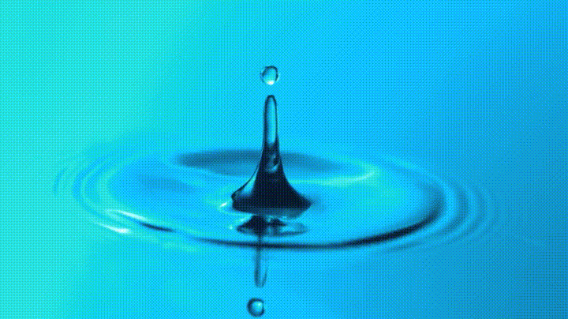

Producción hídrica, clima y estado operativo en una sola plataforma
Este sitio presenta la operación del nodo AWA05 instalado en campo. Una Raspberry Pi 4B registra el nivel de captación, las variables microclimáticas y la salud del hardware; después procesa y publica los datos de forma automática cada quince minutos. El resultado es una vista pública y actualizada del desempeño de la máquina cosechadora de agua.
El sistema está organizado en ocho módulos que resumen la producción, el clima, la operación del nodo y el desempeño económico de AWA05.
Cuatro etapas automáticas conectan la medición física con la visualización pública de los datos.
Nueve series climáticas y la medición de nivel permiten estudiar cuándo y cuánto agua produce la máquina.
Hardware de bajo consumo preparado para operar de forma continua y publicar telemetría desde el sitio de monitoreo.